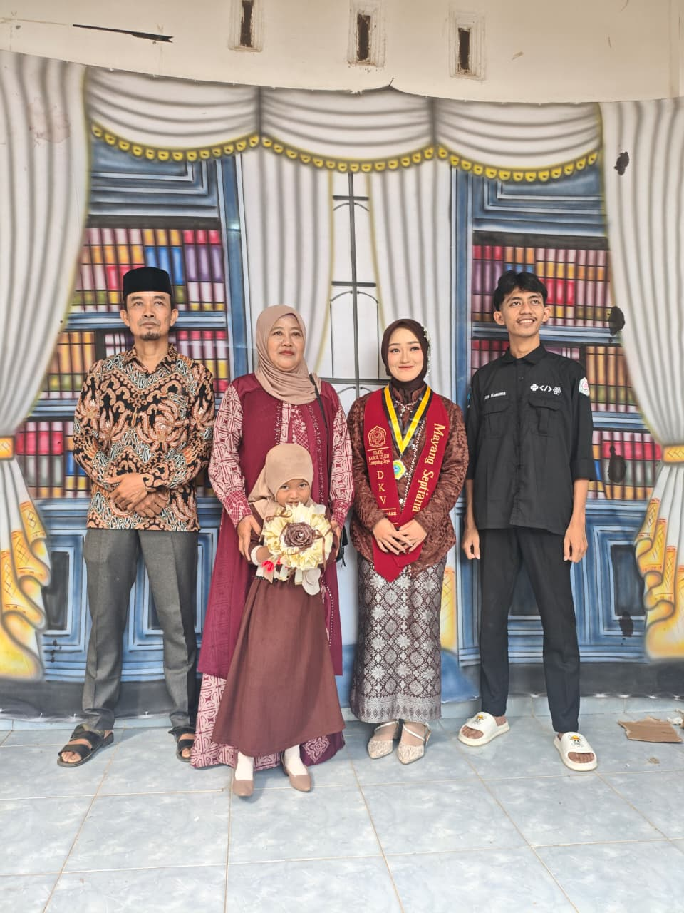

Sebelumnya makasih sama kamu udah selalu buat aku Bahagia tiap Waktu setiap aku liat kamu foto kamu,di chat kamu dan lain" aku ga pernah merasa terganggu sama kamu and aku gak pernah marah semarah"nya ke kamu aku tau keinginan kamu tapi aku udah sadar hal" kecil yang kamu inginkan seperti share video ngabarin kamu itu hal kecil menurutku dulu tapi hal besar untuk kamu yang paling aku sadari mungkin kamu berfikir kamu tak merasa aku nganggep kamu ada,aku mau rubah semua itu kata kamu udah terlambat ya emang sudah terlambat untuk kamu karena udah terlalu sakit dan dalem luka yang kamu terima dan perlakuanku ke kamu terlalu kejam.
Aku setiap hari kepikiran kamu karena mengingat betapa kejamnya aku ke kamu Waktu itu,terima kasih udah gak pernah marah sama aku kamu baik kamu pengertian sama aku yang nggak pernah baik sama kamu,namun kamu udah berhasil buat aku sadar, buat aku susah lupain kamu akupun heran sendiri kok bisa secinta ini aku kekamu fikiranku cuman ya ini timbal balik karena kamu cinta ke aku tapi aku egois dan sekarang aku harus menaggung karmaku dulu udah bikin kamu luka.
Aku banyak aturan aku sering ngatur kamu sekaang kamu udah bebas karena juga karena aku ada di hidupmu cuman buat kamu gak tenang karena gak ngabarin nangis karena aku marah gak jelas
aku cuman berpersan ke kamu aku gak perenah seperti ini ke cewek lain mohon" itu karena aku saying cinta banget ke kamu impianku cuman sama kamu, jika aku tak bersamamu dan kamu Bersama orang lain sudah ku pastikan dia lebih baik dari pada aku,
Jujur aku masih sayang sama kamu cinta sama kamu tapi aku sadar sesadar sadarnya aku gak pantas sama kamu. salam buat meysa ya
aku gak pernah bisa membayangkan betapa sakitnya kamu, karena aku yang berbuat aja gak bisa bayangin ya mungkin aku merasa kecewa sama diriku sendiri menahan ingin memiliki kamu seperti dulu.
Mengingat kita udah beberapa tahun Bersama nggak menuntut kamu harus bersamaku karena kenyamananmu harus di berikan pada orang pantas baik sama kamu.aku berjanji memengang janji yang kamu berikan nasehatmu.
aku tidak berharap kamu Kembali karena juga itu pun gak kemungkinan besar bisa terjadi karena aku harus memantaskan diri buat kamu, mangkanya aku gak mau berdepat memaksa kamu untuk Kembali
pengen banget sebenernya chatan aja kek dulu Bahagia seneng tapi apalah daya kamu sudah kecewa kamu cuek sama aku, bukanya aku ingin kamu care,mungkin itu yang ternyaman buat kamu aku gak ada hak buat maksa kamu care sama aku ,aku tau, itu semua biar aku ngerasain apa yang kamu rasain, maka dari itu aku chat kmau sama aja melukai diriku sendiri karena mengingat kejamnya sikapku ke kamu
dan hati ini cuman ada kamu tak ada yang lain,aku tau masih banyak cewe di luar sana yang lebih cantik dari kamu tapi gak menuntut bisa seperti kamu yang perduli dan perhatian baik ke aku, jadi selagi di hatiku ada kamu aku tak pernah dekat sama siapapun.namun jika kamu sudah menenmukan lelaki yang bisa buatkamu nyaman Bahagia sudah cukup Waktu aku menyimpan hati ini buat kamu tapi jika kamu bertanya apakah kamu masih sayang sama aku tanpa ku jawab kamu harus tau jawabanya "Sampai Kapanpun"
aku menulis semua ini sambil mengingat penyesalanku dulu.aku tau kamu gak pernah mengahrapkan aku hadir lagi karena aku tau kamu gak mau menghaadirkan luka lagi
Memang jika cinta cuman dihadirkan dengan kesetiaan dan perasaan kedepanya hanya jadi cerita,aku tak punya apa" cuman punya rasa itu saja
terimakasih udah menjadi penyemangat kedua setelah ibuku yang sekarang sudah hilang satu penyemangat dan kebahagiaanku
nggak perlu di bales cukup kamu simpan aja tulisan ini